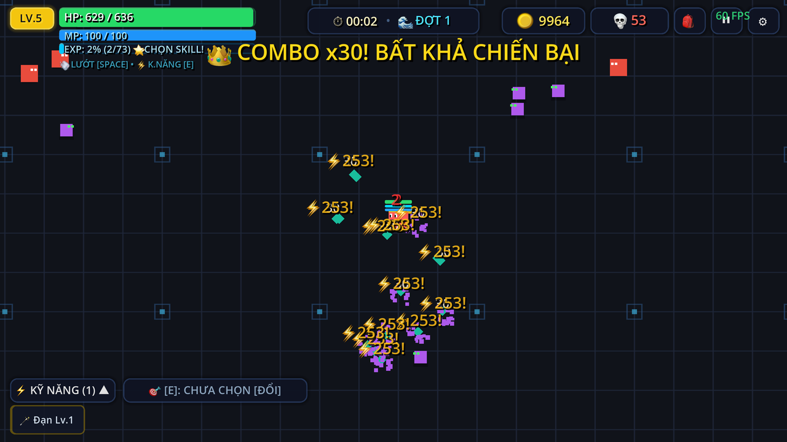
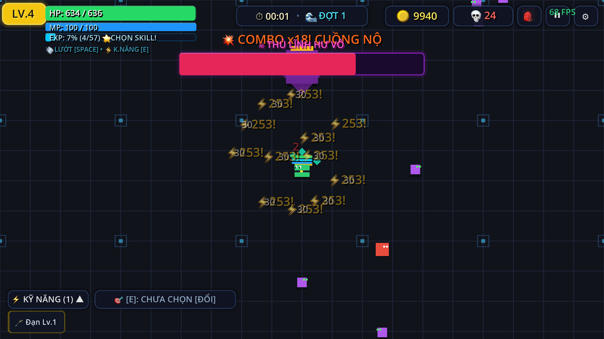
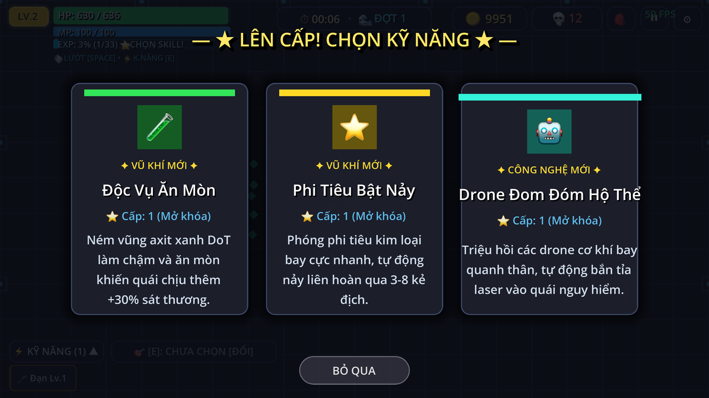

Sinh tồn vô tận · Roguelite bắn quái
Sống sót trước bầy quái. Mạnh lên sau mỗi đợt.
Một mạng duy nhất, quái mạnh dần theo từng phút và cứ năm phút một thủ lĩnh giáng lâm. Lên cấp, chọn kỹ năng, thu thập trang bị và chạy đua cùng kỷ lục của chính mình.
Cơ chế cốt lõi
Mọi thứ cần có ở một game sinh tồn vô tận.
- Đợt quái vô tận
- Đợt mới mỗi 60 giây, xung kích giữa đợt và các đội hình bao vây, gọng kìm, tập kích bốn góc.
- 11 chủng quái
- Sát thủ dịch chuyển, pháp sư bắn quạt, tử thần triệu hồi, người đá kháng đẩy lùi, nhãn ma bắn laser xuyên phá.
- 5 thủ lĩnh
- Cứ năm phút một thủ lĩnh: Hư Vô, Viêm Ma, Tử Thần, Cự Thần, Huyết Ma. Hạ gục để nhận buff vĩnh viễn.
- 18 kỹ năng
- Sét, hố đen, hào quang, thiên thạch, ngưng đọng thời gian. Nâng theo cấp độ và kích hoạt chủ động bằng phím E.
- 72 trang bị
- Sáu ô trang bị, năm phẩm cấp từ Thường đến Huyền Thoại, nâng cấp, đột phá và quay Gacha bằng vàng.
- Lưu an toàn
- Tự động lưu mỗi 30 giây, sao lưu dự phòng và chống mở hai cửa sổ game cùng lúc.
Hình ảnh trong game



Điều khiển
- WASD
- di chuyển
- Space
- lướt, bất tử trong lúc lướt
- Chuột trái
- bắn về hướng ngắm
- T
- bật/tắt tự động bắn
- E
- kỹ năng chủ động
- 1–9 / Q
- đổi kỹ năng chủ động
- P / B / Esc
- tạm dừng, trang bị, thoát menu
Tải game
Windows 10 / 11 (64-bit)
Hướng dẫn cài đặt
- Tải file .zip ở trên và giải nén ra một thư mục bất kỳ.
- Chạy Pixel Horde Survival.exe.
- Nếu Windows SmartScreen cảnh báo: bấm More info → Run anyway (game chưa ký số).
- Dữ liệu lưu tại
%APPDATA%\Godot\app_userdata\Pixel Horde Survival.
Cấu hình tối thiểu
- Windows 10/11 64-bit, CPU 2 nhân 2.0 GHz
- RAM 2 GB, GPU hỗ trợ OpenGL 3.3 / Direct3D 12
- Khoảng 120 MB dung lượng trống
Cập nhật
Hỏi đáp
Game có mất phí không?
Không. Bản Windows miễn phí hoàn toàn, không quảng cáo và không có giao dịch trong game.
Có bản cho điện thoại hoặc trình duyệt không?
Giao diện cảm ứng đã có sẵn trong game; bản Android và bản chơi trên trình duyệt đang được hoàn thiện.
Làm sao biết có bản cập nhật mới?
Mở game, vào Cài đặt → Kiểm tra cập nhật, hoặc xem mục Cập nhật trên trang này.
Báo lỗi ở đâu?
Gửi báo lỗi kèm ảnh chụp màn hình qua GitHub Issues.